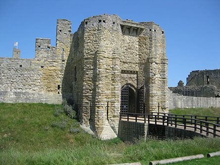

England > North East
WARKWORTH CASTLE
and the MEDIEVAL FORTIFIED BRIDGE
Warkworth Castle was built in the mid-twelfth century either by Prince Henry of Scotland or by English forces after Henry II seized back control of Northumberland. Edward III granted the castle to the powerful Percy family in 1328 and they converted it into a lavish palace. The castle was besieged during the Wars of the Roses and was garrisoned during the seventeenth century civil war.
History
Gallery
Getting There
Introduction
Warkworth overlooks the River Coquet, an important waterway which gave the site easy access to the sea and also facilitated movement deep into the Northumberland hinterland. Constructed within a loop of the river, both the water and the steep banks provided strong natural defences. For these reasons the site has probably been occupied since Neolithic times and may have been fortified by the Iron Age. However, the earliest surviving record of a settlement at Warkworth dates from AD 737 when Ceolwulf, King of Northumbria granted it to Lindisfarne Priory. At this time it was known as Werceworde, meaning the 'home of Werce'. It was seized back by Osbert, King of Northumbria in the ninth century and later became a property of the Earls of Northumbria. It is possible some form of high status residence was built on the site at this time.
Foundation
The earliest castle was an earth and timber motte-and-bailey fortification built on the thin neck of land at the base of the loop within the river. However, although the castle is securely dated to the mid-twelfth century, it is unknown who constructed it. At this time ownership of the northern counties of England was disputed with Scotland. Concurrently England was in the midst of a civil war, the Anarchy, as rival claimants Stephen and Matilda vied for the throne. Amidst this chaos, David I of Scotland saw an opportunity and invaded northern England. Despite his defeat at the Battle of the Standard (1138) , he secured a favourable settlement. At the Treaty of Durham (1139), it was agreed that Northumberland would remain in Scottish hands under the authority of David's son, Henry, who became Earl of Northumberland. However, a key requirement of the peace treaty was that the major border fortresses at Bamburgh and Newcastle remained in English hands. Accordingly it is mooted that Henry built Warkworth Castle to serve as his administrative centre to reduce the threat from these potentially hostile bases. Alternatively, the castle may have been raised by Henry II of England after he took back control of Northumberland in 1157. Although this power-grab was done without warfare, numerous other fortifications were constructed at this time such as Harbottle Castle .
Rebuilding
Henry II granted Warkworth to Roger fitz Eustace between 1157 and 1164. This powerful landowner owned estates across the country but his main properties were in Eastern England. Nevertheless, he mounted a spirited and successful defence of the unfinished Newcastle Castle in 1173 against an attack by William I (the Lion) of Scotland. The Scots invaded Northumberland again the following year and this time launched an assault on Warkworth during which the population was slaughtered. The castle is not mentioned in the account of the action suggesting it was in a poor state of repair by this time. It remained ruinous until 1199 when the then owner, Robert Fitz Roger, commenced a wholesale rebuilding. He laid out the castle in its current form and commenced construction of the gatehouse, curtain wall and Carrickfergus tower. He may also have commissioned a Great Keep on top of the motte. His upgrades were sufficiently grand for Robert to host King John at the castle in 1213.
The gatehouse was constructed by Robert Fitz Roger in the early thirteenth century.
Scottish Wars
When the Wars of Scottish Independence broke out in the late thirteenth century, the then owner of Warkworth Castle was Robert de Clavering. He was present at the Battle of Stirling Bridge (1297) , when William Wallace defeated a portion of the English Army, and was captured and ransomed. Although Wallace was defeated the following year, the rebellion of Robert the Bruce in 1306 started a chain of events that would have significant implications for northern England. The decisive defeat of English forces at the Battle of Bannockburn (1314) enabled the Scots to raid into the northern counties with impunity as they attempted to force a political settlement. Warkworth Castle became increasingly important as a border fortress and its garrison was augmented at this time. This provided a degree of stability for the local populace although this did not stop the castle being briefly besieged in 1327 and the town sacked in 1341.
The Percys
In 1328 the castle was granted by Edward III to Henry de Percy. He was the foremost magnate in the north whose main seat was at Alnwick Castle . He made few modifications but around 1380 his descendant - Henry Percy, Earl of Northumberland - made Warkworth his main residence. The unusual but stylish Great Keep was added at this time to mark Percy's elevation to Earl and perhaps also to show his power was equal to John of Gaunt who had built the great Dunstanburgh Castle around the same time. The town gatehouse, which controlled access across the bridge, was also built probably to facilitate effective taxation.
In 1403 the Earl of Northumberland's son, Henry 'Hotspur' Percy, rebelled against Henry IV. He was defeated at the Battle of Shrewsbury (1403) and the Percy estates taken into Crown control. They were restored to the Earl the following year but in 1405 he supported an uprising led by Richard Scrope, Archbishop of York. A Royal army was sent north and, after defeating the rebellion, seized control of Warkworth Castle.
The Great Keep was built by Henry Percy, Earl of Northumberland in the 1380s.
Wars of the Roses
The castle remained in Crown ownership until 1416 when Henry V restored the family estates and the title of Earl of Northumberland to Hotspur's son, Henry Percy. He held them until his death at the hands of Yorkist forces at the First Battle of St Albans (1455). His son and successor, also called Henry, became an ardent Lancastrian supporter but was killed at the Battle of Towton (1461) . Nevertheless the family continued their resistance against the Yorkists and garrisoned their great castles in the north - Alnwick , Bamburgh , Dunstanburgh and Warkworth - in order to keep the road to Scotland under Lancastrian control. In response the Yorkist commander Richard Neville, Earl of Warwick marched north and besieged the four fortresses. Warkworth was quickly taken and became the headquarters for the Earl as he continued the siege works against the other outposts. All eventually fell and the Percys were deprived of their property once more. The family made peace with the Yorkists in 1471 and Henry Percy was restored his inheritance by Edward IV. He remained loyal until 1485 when, whilst commanding the rearguard of the Yorkist army at the Battle of Bosworth Field , he refused to commit his forces leaving Richard III to be slain and replaced by Henry Tudor. He achieved little from this act and was murdered by a mob in 1489.
The Tudor Era
Warkworth Castle passed into Crown ownership in 1537 and remained in Crown hands until it was restored to the Percy family by Mary I in 1557. However, it was seized again in 1569 when Thomas Percy, seventh Earl of Northumberland rebelled against Elizabeth I. Warkworth Castle itself was seized during this campaign and the Earl - who fled to Scotland - was captured, sold to Elizabeth and executed at York. In 1574 the castle was restored to the Percy family but by this time the structure was in decline. This was hastened by the Union of the English and Scottish Crowns in 1603 which made its role as a border fortress superfluous.
Later History
In 1605 the then owner of Warkworth Castle - Henry Percy, Ninth Earl of Northumberland - was implicated in the Gunpowder Plot. Although he escaped execution, he was fined £30,000 and was imprisoned in the Tower of London for 17 years. To help pay the fine, Warkworth Castle was leased to Sir Ralph Gray of Chillingham Castle . He neglected the structure and by 1608 lead and other building materials were being stripped from the castle. Accordingly the castle was little more than an abandoned ruin by the outbreak of the civil war and, although garrisoned for the King, seems to have played no part in the hostilities. The Royalists garrisoned it again in 1648 during the Second Civil War but they withdrew the following year and Parliamentary forces partially demolished the castle to prevent any further use. Thereafter stone was robbed from the ruins to support buildings elsewhere and the castle was never rebuilt.
Bibliography
Allen, R (1976). English Castles . Batsford, London.
Dodds, J.F (1999). Bastions and Belligerents . Keepdate Publishing, Newcastle.
Douglas, D.C and Rothwell, H (ed) (1975). English Historical Documents Vol 3 (1189-1327) . Routledge, London.
Douglas, D.C and Myers, A.R (ed) (1975). English Historical Documents Vol 4 (1327-1485) . Routledge, London.
Emery, A (1996). Greater Medieval Houses of England and Wales, Vol. I. 1300-1500 . Cambridge University Press, Cambridge.
Goodall, J (2011). T he English Castle 1066-1650 . Yale University Press.
Goodall, J (2006). Warkworth Castle and Hermitage . English Heritage, London.
Graham, F (1976). The Castles of Northumberland . Newcastle.
Jackson, M.J (1992). Castles of Northumbria . Carlisle.
Johnson, P (2006). Castles from the Air: An Aerial Portrait of Britain's Finest Castles . Bloomsbury, London.
King, C.D.J (1983). Castellarium anglicanum: an index and bibliography of the castles in England, Wales and the Islands . Kraus International Publications.
Milner, L (1990). Warkworth Keep, Northumberland . London.
Rowland, T.H (1987). Medieval Castles, Towers, Peles and Bastles of Northumberland . Sandhill Press.
Pettifer, A (1995). English Castles, A guide by counties . Boydell Press, Woodbridge.
Salter, M (1997). The Castles and Tower Houses of Northumberland . Folly Publications.
Simpson, W.D (1938). Warkworth: a castle of livery and maintenance .
What's There?
Visit Official Website
Warkworth Castle is the care of English Heritage and is a major tourist attraction. The main feature is the elaborate central Keep that was built in the fourteenth century as a palatial residence for the Percy family. To the north the medieval town bridge and gatehouse survive.
Warkworth Castle . The castle was a motte-and-bailey fortification. Initially constructed in timber, it was rebuilt in stone in the early thirteenth century. This footprint was retained when the castle was rebuilt by Henry Percy, Earl of Northumberland in the 1380s.
Keep . The Great Keep at Warkwork was built over the remains of an earlier motte in the late fourteenth century. The large windows betray its residential function rather than any serious consideration of defensive requirements.
Gatehouse .
Bailey .
Lion Tower .
Warkworth . Warkworth is located within a loop in the River Coquet which surrounds the North, East and West sides. The river, along with the steep scarps along its length, negated any requirement for a town wall. The neck of land to the south was occupied by the castle although there may have been a further gatehouse and possibly a short ditch and/or rampart to secure that side of the town. However, to date they have not been located and may never have been built. The site was within one mile of the North Sea.
Town Gatehouse and Medieval Bridge . The two storey gatehouse was built on the town side of the bridge. Its main function would have been to throttle traffic through a single gateway for taxation purposes but could also have prevented a significant force from crossing the bridge. There was no flanking curtain wall, the terrain along the river making it unnecessary. The gatehouse was probably built in the late fourteenth century concurrently with the conversion of the castle into a palatial residence by Henry Percy, Earl of Northumberland.
Town Gatehouse and Medieval Bridge .
Warkworth Castle is a major tourist attraction and well sign-posted. A dedicated (pay and display) car park is directly adjacent to the castle entrance. On-road car parking is possible near the bridge and gatehouse but the visitor is advised to walk instead taking The Butts, the road which runs adjacent to the river. This allows the steep scarping of the river bank to be viewed and gives a good appreciation as to why town walls were not required.
Warkworth Castle / Car Park
NE65 0UJ
55.344862N 1.611875W
Fortified Bridge / Gatehouse
NE65 0XD
55.349288N 1.610176W
(c) Copyright 2019 CastlesFortsBattles.co.uk
Recovered original photographs, plans and images
